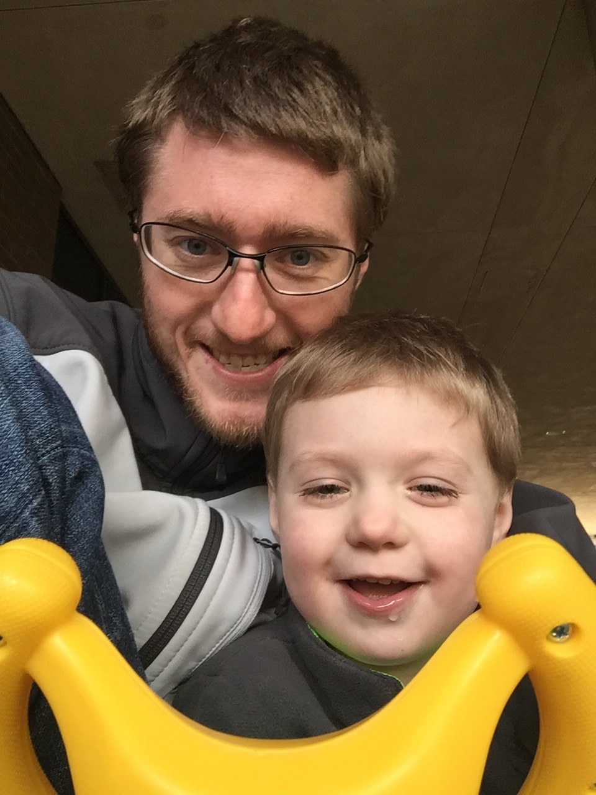

Brice Anthony Walker
8119 29th Ave Ct S Apt J
Lakewood, WA 98499
(208) 699-8446
brice@bricewalker.com
bricewalker@jhu.edu
My name is Brice Walker, and I am a data scientist. I'm also currently working as an addictions counselor for American Behavioral Health Systems, where I maintain a caseload of roughly 15 individuals. I operate under state licensing in Washington. My treatment philosophy is a compassion-based, harm-reduction approach that is trauma informed and uses MI, DBT, CBT, and REBT. I received my B.S. from the University of Idaho in Psychology with a minor in Addictions Studies. I have a CDP with clinical supervision designation from the Washington State Department of Health.
I have been clean and sober since 03/14/2009. I currently serve on the board of directors for Dual Diagnosis Anonymous and have been actively involved in the peer movement as both an advocate and as a provider. Although I am slowly retiring from my career in mental health, I continue to advocate for the involvement of people with lived experience in all areas in health systems organization and for the implementation of evidence based practices that move away from the over-reliance on the medical model in the psychiatric sciences. To learn more about the peer movement and efforts to bring evidence based practices and peer support services to mental health treatment, please visit Mad in America. If you would like to support reformation efforts in mental health care, please visit the Foundation for Excellence in Mental Health, and If you'd like to get involved in efforts to bring a safe consumption space to Washington State, please check out Vocal-WA.
I currently reside in Lakewood, Washington with my 4 year old son, Alexander, and our golden retriever, Lightning. I am a PNW native and my hobbies include cooking, hiking, music production, and web design.
Click on the download button for a current copy of my resume or scroll down to get a deeper look at my knowledge, skills, abilities, and accomplishments.
Substance Use Disorder Counselor• September 2017 - Present
I currently work for American Behavioral Health Systems as a Substance Use Disorder Counselor, where I manage a residential DOC caseload.
Substance Use Disorder Counselor• May 2016 - September 2017
I worked for Lionrock Recovery as a Substance Use Disorder Counselor. My primary role was as a group counselor. I ran several CBT group therapy sessions each week for clients throughout the world and managed 2 (intensive)outpatient caseloads for the Pacific Northwest. I operated under state certification in Washington and Oregon and through national level certification.
Lead Substance Use Disorder Clinician• September 2014 - August 2015
I supervised all substance abuse treatment services for Providence of Idaho in Shoshone County, Idaho. I managed (intensive)outpatient programs for both adolescents and adults. Some of my accomplishments while at this position include obtaining a contract with the Shoshone County Drug Court, securing a grant (PWWIC) to get pregnant women and women with infant children funding for substance abuse treatment and related programs/referrals/costs (with myself named as the primary treatment provider/case manager for state funded patients in this population), and the development of an on-site substance abuse screening/assessment program with the Shoshone and Benewah County Jails. I also created the first and only ASAM level 2.1 IOP program for adolescents in Shoshone County. I supervised a team of 4 that included drug testers, case managers and community based psycho-social rehabilitation specialists. This program served roughly 40 adults and 10 adolescents at any given moment.
Lead Substance Use Disorder Clinician• June 2014 - September 2014
I was the primary full-time substance abuse counselor for Alliance in Kellogg, Idaho. I managed an intensive outpatient adult substance abuse program, and an outpatient adolescent substance abuse program. I managed treatment planning for all 12 clients in the Shoshone County Drug Court/ DUI court program. This program served about 45 adults and 5 adolescents. One of my biggest accomplishments while with this organization was creating an on-site screening/assessment program for the Bonner and Kootenai County jails.
Substance Use Disorder Clinician• March 2013 - June 2014
I worked as a substance abuse counselor at a 300-bed residential, co-ed, substance abuse treatment program. I managed a caseload of 12 adult males in a male-only, mixed-funding therapeutic community ward of the residential program. I provided all individual and group counseling services for all 12 clients on my caseload and provided case management and lecturing services for the rest of the ~120 clients in the mixed-funding ward. I also provided healthy behavior promotion and prevention services for this population. I was responsible for providing management for the therapeutic community. I taught cognitive restructuring techniques using T4C, MRT, REBT, Reality Therapy, and Choice Theory curricula. Some of my accomplishments while in this position include transitioning the program into the first therapeutic community outside of the prison system in Washington State, and transitioning the billing practices for state-funded clinets to the Apple Health System.
M.S. in Data Science• Expected Graduation Date: 2019
I am enrolled in a masters in data science program with Johns Hopkins University.
B.S. in Psychology with a minor in Addictions Studies• 2015
I completeted a Bachelor of Science at the University of Idaho in Coeur d'Alene, Idaho.
Research Assistant• February 2014 - Present
I am working with Gary Hopkins, M.D., Dr.P.H. and is actively engaged in youth risk behavior research, secondary data analysis, and literature reviews for multiple projects.
Research Assistant• February 2014 - Present
I am working with Peter Gleason, Ph.D. to complete data analysis, a literature review, and manuscript writing for a project that looked at homeless youth.
Research Assistant• September 2015 - December 2015
I worked on a project evaluating health outcomes for Portland State University's Queer Resource Center. I also worked on a GIS project looking at recreational cannabis stores in Portland and neighborhood SES status, as well as a qualitative review of recreational cannabis advertisements in the city of Portland.
Please contact me if you are interested in my skills as a program evaluator, have questions about my research, or would like to collaborate.

Brice Anthony Walker
8119 29th Ave Ct S Apt J
Lakewood, WA 98499
(208) 699-8446
brice@bricewalker.com